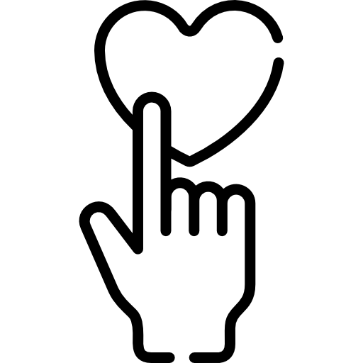

<div class="container">
  <div [ngClass]="toggleProperty ? 'flipped' : ''" class="card">
    <div class="front" (click)="toggle()">
      <ng-content select="flip-card-front"></ng-content>
      
      <div class="arrow-icon" >
      
      </div>
    </div>
    <div class="back" (click)="toggle()">
      <ng-content select="flip-card-back"></ng-content>
      <p>Desde pequeno gostei de cozinhar e conforme o tempo foi passando, se tornou um hábito de família, de partilha, de momentos e de abstração.
          Cresci com referenciais fortes, minha avó viveu da cozinha, e depois compartilhei desses momentos com a minha mãe, que hoje, infelizmente, não está mais por aqui fisicamente.
          Este projeto é para armazenar e fazer desse espaço um lugar para acolher as lembranças e esses momentos especiais pra mim e pra quem mais quiser partilhar deles comigo.
          Espero que possam se deliciar com cada pedaço compartilhado aqui.</p>
      <div class="arrow-icon" >
      
      </div>
    </div>
  </div>
</div>